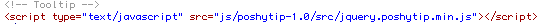

Thank you for downloading Proximet Site Template.
A) General
SOME GENERAL INFORMATIONS
This template is HTML5/CSS3 Responsive Template. It is compatible with all modern Browsers, Smartphones and Tablet's. It is based on 960 grid and elegantly scales down to downsized browser windows, tablets, mobile phones (in landscape and portrait)
File List
Proximet folder contains:
- → HTML folder
- → Help folder
- → License
B) HTML Structure
Index Page HTML Structure
- › Header - Logo & Menu Part
- › Home Content Part - Slider
- › Home Content Part - Box One
- › Home Content Part - Box Two
- › Home Content Part - Box Three
- › Home Content Part - Footer
- › Home Content Part - Copyright
All content is within div named container /*div class="container"/*. With this your layout stayed centered on site.
Navigation Structure
Template contains "Main Menu" and "Responsive Menu" - for mobile and tablet's

Tooltip Help
This part in the html "head" is responsible for Tooltip: 
To assign tooltip to work for some other element on the site or just to delete it, you need to add or remove this:
Here is one example:
Inside title part you need to write text that u want to appear inside tooltip box.
prettyPhoto (lightbox) Help
This part in the html "head" is responsible for prettyPhoto :
Here is one example, open portfolio.html file and find this lines:
Inside href you need to put link to your bigger image that u want to show inside lightbox.
How to change a logo!? Here you can find codes for it

You just need to save your logo as a .png file in your images folder and to put it inside img src="images/logo.png" part of the code.
C) CSS Structure
CSS File List
CSS Folder contains 4 CSS files:
- → base.css - base template styles
- → prettyPhoto.css
- → screen.css - main template styles and media queries
- → skeleton.css - 960 grid system
Please note
The styles mentioned above are essential files, don`t remove them from your html files:
In screen.css all codes are well sorted for each part of the html structure. All you need to do in order to customize your website is to find corresponding id or class in the markup and to fnd its style in CSS fle. For example:
HTML:
CSS:
If you need some help with css part or if you don`t know how to use and change it you can visit w3School: http://www.w3schools.com where you will find great tutorials and examples for CSS and also for the HTML, JAVA, PHP...
D) JS Structure
JS File List
- › jquery-1.8.0.min.js - this is crucial file, don't delete it.
- › screen.js - main file for including js scripts
- › poshytip-1.0/src/jquery.poshytip.min.js - tooltip
- › tabs.js - tabs
- › jquery.tweetable.js - latest tweets
- › jquery.prettyPhoto.js - prettyPhoto for images
- › jquery.flexslider-min.js - responsive slider
- › superfish.js - jquery menu
- › hoverIntent.js
Js scripts are placed at the very bottom of the page in order to allow a browser first to load content and afterwards – javascript elements.
Like this :
E) PHP Structure
PHP Files
"process.php" file is important for the Contact Page / contact form
inside $toemail = 'test@youremail.com' you need to put your email adress so that people can contact you
Contact form is activated inside of the screen.js file as:
F) Credits
Credits to Different Script Files
- jQuery:http://jquery.com/
- PrettyPhoto: http://www.no-margin-for-errors.com/projects/prettyphoto-jquery-lightbox-clone/
- Google Fonts: http://www.google.com/webfonts#ChoosePlace:select
- Tweetable: http://theodin.co.uk/blog/jquery/tweetable-1-6-launched.html
- Superfish Menu: http://users.tpg.com.au/j_birch/plugins/superfish/
- Flexslider: http://www.woothemes.com/flexslider/
Credits for different Assets - audio and images
Icons that i used are from premiumpixels.com
Photos that i used for live preview are from peopleimages.com